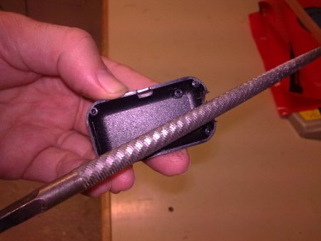
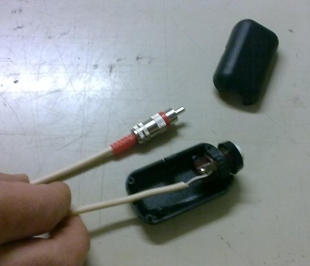

Construcción de un pulsador
Xavier de Blas Foix, Josep Ma Padullés. Proyecto Chronojump. Abril 2009.
Descripción
Se pretende construir un pulsador que se conectará al Chronopic.
Materiales
- 1 Pulsador (no interruptor), normalmente abierto (NA)
- 1 Caja pequeña
- 1 Conector RCA macho
- Lija redondeada
- Soldador
Instrucciones
- Materiales

- Limando la caja

- Conectando los cables al pulsador

- Conectando cable a RCA macho

- Pulsador finalizado

Discuta esta información en el foro:
Instrucciones para la construcción de un pulsador (foro de Chronojump).
Xavier de Blas, Josep Ma Padullés. Agradecimientos a Luis Tortosa.